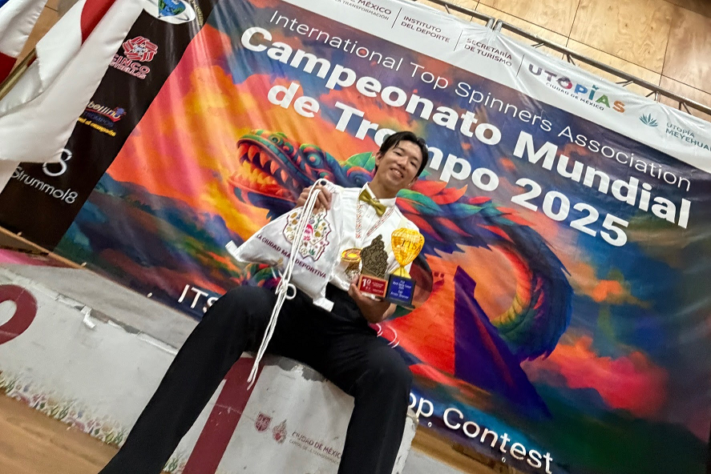
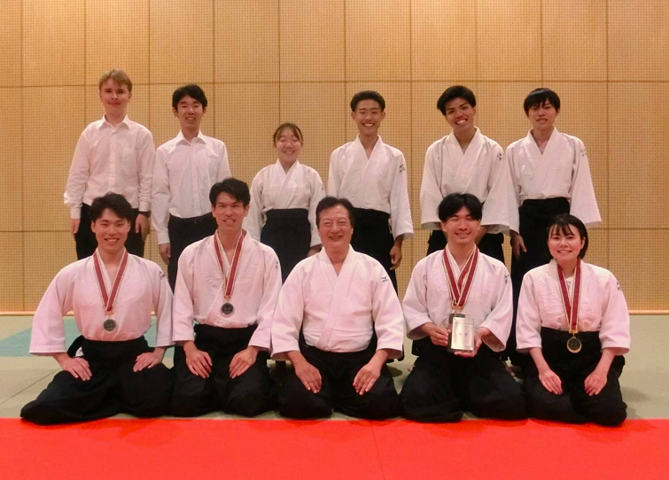

- 2025/12/1
- 【12月5日開催！】 企業による環境課題解決ワークショップ/ [December 5] Workshop: ...
- 2025/12/1
- [2026/01/24（土）開催・要申込] MIRAI CREAで国際交流イベントを開催します！／Held...
- 2025/11/28
- （英会話セッション）SALC 12月のスケジュール（無料）/SALC English Conversation Se...
- 2025/11/27
- ご協力ください！【11/27】 学生による授業改善アンケート回答率/Cooperate! 【11/27】...
- 2025/11/27
- 【東広島キャンパス】電動マイクロモビリティ安全講習会開催について／【Higashi-Hiro...
- 2025/11/26
- 【12/3（水）正午まで！】2025年度後期START/START+プログラムリトアニア，インド参加...
- 2025/11/25
- （案内）＜青少年国際交流イベント＠広島＞の参加募集について（12/13開催）／(Inform...
- 2025/11/25
- 東広島チャレンジシップ-艫- 最終報告会開催！／Higashihiroshima Challenge Ship -T...
- 2025/11/25
- 2025/12/21（日）ヒロシマ平和研究教育機構国際シンポジウム「被爆80年を超えて」のご...
- 2025/11/25
- 【2025/12/11開催・霞・要申込】ひろしまバイオデザインPresents第14回医工連携セミナ...
- 2025/11/25
- 🌈Micron Career Forum 2025開催のお知らせ🌈/Announcement of Micron Career Forum 2...
- 2025/11/21
- 台湾・中国・非漢字圏地域からの研修留学生との交流学生（アルバイト・ボランティア）...
- 2025/11/20
- (information) 21st International Exchange Winter Gathering Hosted by: Hokkaido I...
- 2025/11/20
- 【初開催！】12/5（金）HIROSHIMA NEXT INNOVATION PITCH 2025
- 2025/11/19
- 【募集】広島大学職員のオープン・カンパニーをしてみませんか？／Gain Insight into ...
- 2025/11/19
- 【締切12/18】（経済支援付き！）2025年度グローバルインターンシップ（国際機関・SEA...
- 2025/11/19
- 【12/13（土）開催】広島大学未来創造人材教育機構キックオフシンポジウム「高校.大学...
- 2025/11/18
- (Information) TUFS Online Preparatory Japanese Language Course for International...
- 2025/11/14
- ご協力ください！【11/25】 学生による授業改善アンケート回答率/Cooperate! 【11/25】...
- 2025/11/12
- 【締切12/3】（経済支援付き！海外での企業インターンシップ/2025年度８名募集！）202...
- 2025/11/12
- ご協力ください！【11/12】 学生による授業改善アンケート回答率/Cooperate! 【11/12】...
- 2025/11/7
- ご協力ください！【11/7】 学生による授業改善アンケート回答率/Cooperate! 【11/7】...
- 2025/11/6
- 発明かな？と思ったら⇒【広大学生、教職員対象】（無料）「発明・知的財産相談会」開...
- 2025/11/4
- 【1/4(日)〆切】広島大学交換留学プログラム（HUSA全学募集）2026年度派遣学生第一次募...
- 2025/10/23
- 【受講者募集/Call for Participants】2025年度後期 e-STARTプログラム/ e-START Prog...
- 2025/10/9
- 官⺠協働海外留学⽀援制度 トビタテ！留学JAPAN新・⽇本代表プログラム【⼤学⽣対象】...
- 2025/9/24
- 「広島大学基金児玉派遣留学奨学金」による奨学生募集
- 2025/9/16
- （Information）Japanese Class to enjoy life in Hiroshima 【Tuition Free】 ／（案...
- 2025/9/8
- Request for your cooperation in filling out the 2025 Survey of Living Environmen...
- 2025/9/4
- シャワー無料サービス/広島大学学生向け(校友会会員限定) /Free shower service/For H...
- 2025/9/3
- （案内）東広島市 「多文化共生ヒント集」について／(Information) Higashihiroshima...
- 2025/9/2
- Moodle【ALP】オンライン・アクセシビリティ講座2025」配信開始のお知らせ Notice of ...
- 2025/4/11
- 【東広島キャンパス】学内で荷物を受け取れる「宅配ボックス」を設置しています！※利...
- 2025/2/27
- 【開催案内】2025年度QTA資格取得研修会について/【Information on holding】Qualifyi...
- 2025/1/17
- 広島大学キャンパスガイド募集！／Hiroshima University Campus Guide Wanted！
【学生専用】授業改善アンケート回答用のログインです。アンケート以外の機能は利用できません。
※授業中に回答する場合は，必ず担当教員の指示に従って使用してください。

-
- 
- 2025 World Spintop Contest「アーティスティック部門」で第1位を獲得しました【マジック＆ジャグリングサークル Jack-o'-Lantern】
- 永野 壱が2025年10月11日～12日にメキシコシ...
-
- 
- 全日本心身統一合氣道競技大会で全部門入賞を果たしました【心身統一合氣道部】
- 第44回全日本心身統一合氣道競技大会【日時】2025...
-
- 2025年度第2回大学院新入生交流会のお知らせ （広島大学ピアサポートルーム）
- ・行事名：2025年度第2回大学院新入生交流会 ・日時：7月18日(金) 18:30～20...
システム運用のお知らせ
- 2025/10/08
- 【終了しました/Completed】10/22 メンテナンスに伴う「もみじ」サービス停止について/ Notification of MOMIJIServices and Automatic Certificate Issuance Machine Services Unavailable
- 2025/08/19
- 【終了しました/Completed】（8/20）「証明書自動発行機」による学割証以外の証明書発行を停止しています/ (8/20) Issuance of certificates other than JR student discount is suspended
- 学びのサポート
- 学生生活のサポート
- 進路・就職のサポート
- 留学生へのサポート
- インフォメーション
 2
2